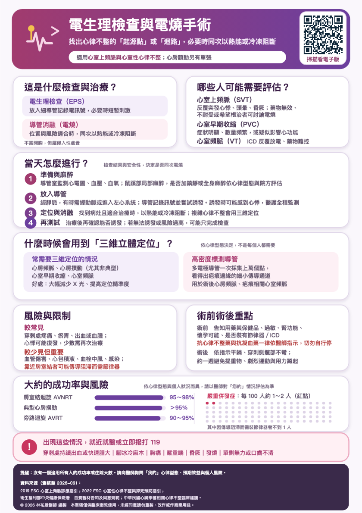

👥
哪些人可能需要評估？
主題 2／10常見的有幾種情況。
第一，心室上頻脈，也就是心跳突然衝到每分鐘一百五十以上，又突然停下來。這一類電燒的成功率很高，很多人可以根治。
第二，心房撲動，心房內有一個大迴圈，電燒的效果也很好。
第三，心房顫動。藥物控制不好、症狀明顯，或是希望維持正常心律的人，可以評估電燒。
第四，心室性心律不整，像是頻繁的心室早期收縮影響到心臟功能，或是心室頻脈。
第五，不明原因的昏倒，而且懷疑和心律不整有關。
要不要做，要看您的症狀、心律不整的種類、藥物的效果，還有您自己的意願。下載原始 A5 衛教單查看原始衛教圖卡

點選圖卡可開啟大圖。原稿來源與說明
資料來源（查核至 2026 年 10 月）：
2019 ESC 心室上頻脈處置指引；2022 ESC 心室心律不整與猝死預防指引；
中華民國心臟學會與心律醫學會相關指引。本單張供衛教，不取代個別診療。
© 2026 林祐賸醫師 編製 未經同意請勿重製。